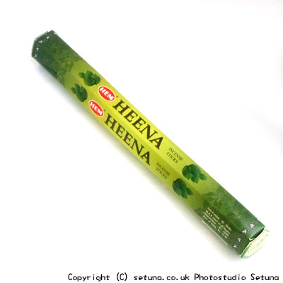

そのまま置いておくと妖艶な女性がどっかにいるんじゃないかと勘違いしそうなほど香水っぽい匂いがします。
髪の毛の良いとされ日本でも有名なハーブですが、インドでは万能薬として、そして女神ラクシュミーが愛でたと言われ、幸運を運ぶ植物とされています。
その為かおめでたい祝事の時や魔を退けたいときに使われるそうです。
点けた時の匂いはインド雑貨のお店などでよくする、あの独特の香りの土っぽい部分のメインの匂いと云った所でしょう。
それが強く長く続きます。
消えた後も残り香が強く残り、消臭効果は抜群です。
ペットの匂い消しにはもってこい！のお香ですし、虫除け効果があるのもペットにはいいですね。
「きつすぎるな〜〜」という方はレモングラスのような、火を点けたときもちゃんと柑橘系の香りのする物と一緒にして使って下さい。
まろやかに変化します。
羽虫・ダニ・ノミ・シラミ等の害虫除けとして効果を発揮します。
